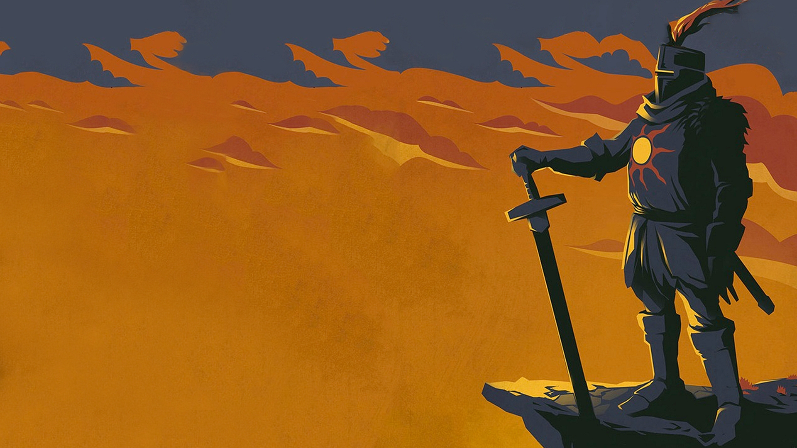

Resumo da Historia.

Dark Souls conta a história de um mundo onde a Chama Primordial, fonte da vida e luz, está se apagando. Gwyn, o Senhor da Luz, sacrifica-se para manter a chama acesa, mas isso causa uma maldição que transforma os humanos em mortos-vivos. O jogador é um Undead escolhido, que deve derrotar poderosos Senhores e decidir se vai reavivar a chama, prolongando a Era do Fogo, ou deixá-la morrer, trazendo a Era das Trevas. A narrativa é fragmentada, exigindo que o jogador descubra detalhes através de diálogos, itens e o ambiente.